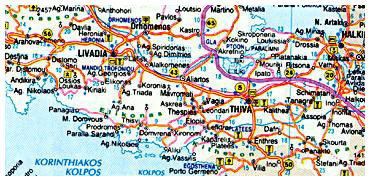
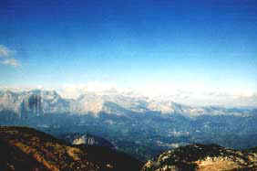
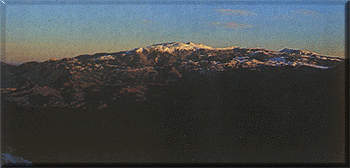
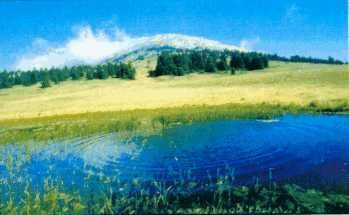

| Κοντά στην Υπάτη και την Παύλιανη, στο Νομό Φθιώτιδας και στο ομώνυμο βουνό, που ορθώνεται επιβλητικά στα νότια της κοιλάδας του Σπερχειού ποταμού, ιδρύθηκε ο Εθνικός Δρυμός Οίτης, που εκτείνεται υψομετρικά από τα 400 μ. μέχρι τα 2.116 μ. της κορυφής Γρεβενό. Αλλες κορυφές είναι ο Σέμπεης (2.086 μ.), ο Αλούμπεης (2058 μ.) και ο Πύργος (2152 μ.) που είναι και η ψηλότερη της Οίτης. Ανάμεσα στις τρεις τελευταίες κορυφές αρχίζει ο ονομαστός παραπόταμος του Σπερχειού, ο Γοργοπόταμος, που έγινε σύμβολο της αντίστασης του έθνους στις μέρες της Γερμανικής κατοχής. Παλιότερα το βουνό αυτό αποτέλεσε ορμητήριο αντίστασης στην Τουρκική στρατιά των Κιοσέ Μεχμέτ και Ομέρ Βρυώνη, όταν το 1821 κατέβηκαν να πνίξουν την επανάσταση των Ελλήνων. |  |
|  | Στην πλατεία των Κομποτάδων σώζονται τα πλατάνια που στη σκιά τους συσκέφθηκαν ο Δυοβουνιώτης, ο Γκούρας και ο Αθανάσιος Διάκος, πριν από την ηρωική του θυσία στη γέφυρα της Αλαμάνας (Σπερχειού). Αλλά η ιστορικότητα του χώρου χάνεται στα βάθη της μυθολογίας. Σε μικρή απόσταση από τα νότια όρια του δρυμού σώζονται τα ερείπια του ναού του Ηρακλή, στον τόπο που λυτρώθηκε από τον τυρανικό χιτώνα της Διάνειρας, πάνω στην πυρά και έγινε ημίθεος με την επέμβαση του Δία. Ο κύριος ασβεστολιθικός όγκος της Οίτης, με την τοπική της ιδιαιτερότητα που την χαρακτηρίζουν φαραγγώδεις χαραδρώσεις, αμβλύνεται στο νότιο τμήμα του Δρυμού όπου η εμφάνιση του αργιλικού σχιστόλιθου διαμορφώνει λοφώδη υψίπεδα με απαλές καμπύλες γραμμές και ανοιχτό ορίζοντα. Το μεγαλύτερο μέρος του Δρυμού καλύπτεται από ελατόδαση κεφαλληνιακής ελάτης (Abies cephalonica) που διακόπτονται από μικρά ή μεγάλα διάκενα με λιβαδική βλάστηση. |
| Στα ελατοδάση συναντά κανείς το θαυμάσιο κόκκινο κρίνο (Lilium chalcedonicum) και μια μεγάλη ποικιλία από πλατύφυλλα δέντρα και θάμνους όπως μελιό (Fraxinus ornus), γαύρο (Carpinus sp.), σφενδάμια (Acer sp.), κράταιγους (Crataegus sp.), προύνους (Prunus sp.), πλατάνια (Platanus sp.), ιτιές (Salix sp.), κ.λ.π., σε μικρές συδενδρίες ή μεμονωμένα άτομα. Ιδιαίτερο φυτοκοινωνικό ενδιαφέρον παρουσιάζει μια μικρή συστάδα από μαυρόπευκα (Pinus nigra), που βρίσκεται σε μια βόρεια στενή ράχη, σε υψόμετρο 1.300 μ. Χαμηλότερα στα 800 μ. εκτείνονται συστάδες φυλλοβόλων δρυών (Quercus sessiliflora, Q conferta) και στα βόρεια όρια του Δρυμού, πυκνοί θαμνώνες από σκληρόφυλλα είδη, όπως πουρνάρι (Quercus coccifera), αριά (Quercus llex), κουμαριές (Arbutus unedo), ρούδια (Phus coriaria), άρκευθοι (Junipers sp.) και πικροδάφνη (Nerium oleander), κύρια μέσα στα ρέματα. |  |
|  | Στο Ν.Δ τμήμα του δρυμού απλώνεται ένα εντυπωσιακό οροπέδιο, οι Λιβαδιές, με πλούσια υπαλπική βλάστηση, όπου κυριαρχεί η αγροστώδης μαραβίτσα ή τούφα (Festuca sp.), είδη αστράγαλου (Astragalus sp.), γκενίστας (Cenista sp.), παλαμονίδας (Cnonis sp.) και πολλά ενδημικά των βουνών της Ελλάδας, όπως ο νάρκισσος (Narcisus poeticus), Diospytos lotus, Asperula oetaea, Hieracium sp., Daphne. Στους υψηλούς βράχους φυτρώνει ο Sideritis romana, είδη sempervirum, sedum κ.α. Η πανίδα της Οίτης, αν και είναι πλούσια σε ποικιλία ειδών και πληθυσμό, περιλαμβάνει μάλλον κοινά και ευρέως διαδεδομένα είδη. Ενα μικρό κοπάδι από αγριόγιδα (Rupicapra rupicapra) είναι πιθανόν ο νοτιότερος πληθυσμός του είδους στην Ελλάδα, ενώ ο λύκος (Canis lupus) μπορεί περιστασιακά να εμφανισθεί το χειμώνα. Η πτηνοπανίδα της περιοχής είναι τυπική των ορεινών οικοσυστημάτων και περιλαμβάνει κυρίως δασόβια είδη. Υπάρχει επίσης ικανοποιητική ποκιλία σε ερπετά, αμφίβια και έντομα που πλουτίζουν το ζωικό κόσμο του βουνού. |